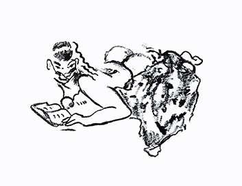

Lisa Holmgren
introduction
Art is a way to create space for meaning. It makes visible how I work, what makes me laugh and what makes me wonder. I use my own visual language to express myself as my surroundings continuously change. The story that is unfolding is always partly untold. I work intuitively and let ideas take on new forms. Forms, which surprise me, and inspire me to react. This interplay between thought and action enables a wordless dialogue between my intentions and expectations, and, suddenly, the finished work. The starting point is always drawing, because to me, it is the fastest way to reach the goal: to evoke and express an emotion.
Studies
2018 Art in a digital environment, 7,5 p. Umeå University2016 - 2017 Master of Fine Art, Berlin–Weißensee Academy of Art
2011 - 2016 Diploma of Fine Art, Berlin–Weißensee Academy of Art
2010 - 2011 Art and visual culture, 30p. University of Gothenburg
2007 - 2008 Artistic education, KV School of Art, Gothenburg
2007 Painting course, Art Students League, NY
EXHIBITIONS
2020 Upcoming: Galleri Lokomotiv Örnsköldsvik2019
GIBCA Extended
Konstrundan i Majorna, Gothenburg
2018
20 days in Yxhult, Kumla municipality, curatorial work with Jelena Rundqvist
EROTICA, Erotica curated by Sarah Lüttchen and Stephanie Kloss, Berlin
2017
HULU, Sabot // Mimi // Faster, curated by Sarah Lüttchen, Berlin
Bitte, bitte bitte, Master exhibition, SEZ, Berlin
2016
Abschlussausstellung, Diploma exhibition, Kaufhaus Jandorf, BerlinKaputt ist nicht genug, Laden fuer Nichts, Leipzig
Wie Naiv. Memhard Club, curated by Sarah Lüttchen and Fritz Poppenberg
Quelltext, BKV, curated by Gerrith Gohlke, Potsdam
Under My Thumb, Neue West Berlin, Berlin
2015
Tag der Öffene Tur, Weißensee Academy of Art, Berlin
Cirrus & Capillatus, Haus des Rundfunks, curated by Lisa BosseWalllust, Kunsthalle am Hamburger Platz, Berlin
2014
Unerhörte Räume, Kunsthalle am Hamburger platz, BerlinWin-Win, Gedok Kunstgemeinschaft, curated by Kerstin Diedrich
Floß der Medusa, Kunsthalle am Hamburger Platz, Berlin
2013
AXIS MUNDI, Academy of Art, HalleNachschlag, Uferhallen, BerlinUHU, Kunsthalle am Hamburger Platz, Berlin
2012
Ich-Prüfung, Kunsthalle am Hamburger Platz, BerlinHorbe, Rathaus, curated by Rachel Ritchford, BerlinColourguard, Private garden, curated by Alberto Di Gennaro
RESIDENCE / GRANTS
Graphic stipend 2019 ÖKKVStone carving workshop, Yxhult Sweden, 2018
St Moritz Art Academy, How to Make Art Books, Workshop with Carmen Strzlecki, 2016